INSTALL - Realsense D435i¶
1. Jetson Orin Kernel Builder¶
Tools to build the Linux kernel and modules on board the Jetson AGX Orin, Orin Nano, or Orin NX. This tool is designed for beginning to intermediate users. Be sure to read the entire document in the repository before proceeding.
git clone https://github.com/jetsonhacks/jetson-orin-kernel-builder.git
cd jetson-orin-kernel-builder
Getting Kernel and Module Sources¶
Run the following from the repository root to fetch the kernel and module sources:
./scripts/get_kernel_sources.sh
Editing the Kernel Configuration¶
Edit the kernel-builder configuration using the provided GUI script:
./scripts/edit_config_gui.sh
You can use the GUI to set device and kernel options:

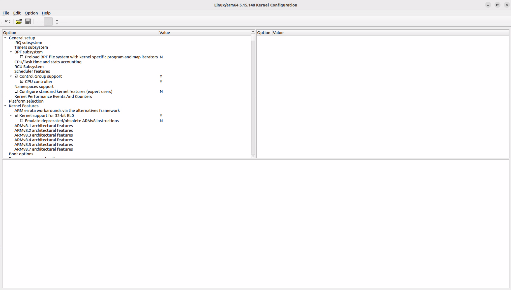
Searching for the CH341 Driver
Use Ctrl+F to search for CH341.

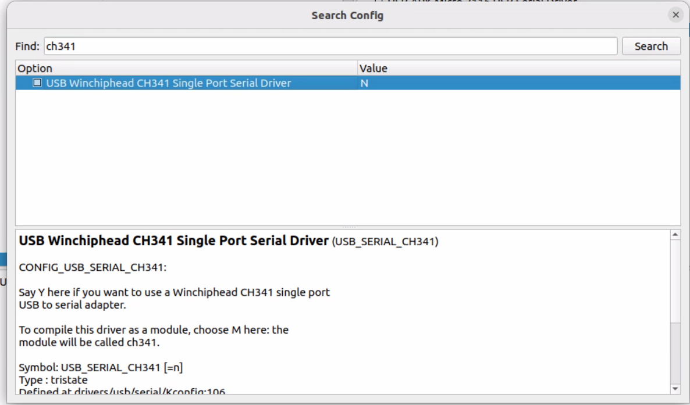
Next, click the letter N to change it to M for the CH341 Single Port Driver so it is built as a module.

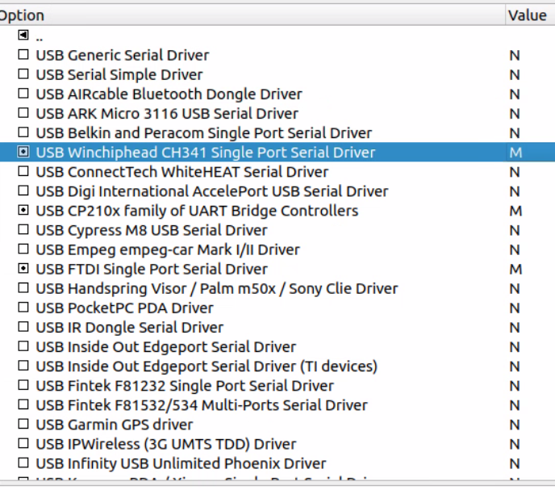
Use Ctrl+F to search for HID_SENSOR_HUB.

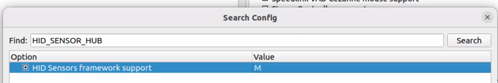
Next, click the letter N to change it to M for the HID Sensors framework support so it is built as a module.
Use Ctrl+F to search for ACCEL_3D.

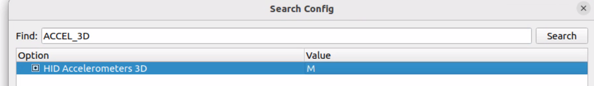
Next, click the letter N to change it to M for the HID Accelerometers 3D so it is built as a module.
Use Ctrl+F to search for GYRO_3D.

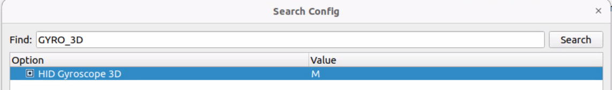
Next, click the letter N to change it to M for the HID Gyroscope 3D so it is built as a module.
When finished, save and quit the configuration editor to apply the change.
Building the Kernel Image¶
Run the kernel build and module installation scripts from the repository. This step may take up to 30 minutes.
./scripts/make_kernel.sh
Copy the path to the generated kernel image. You will need it later

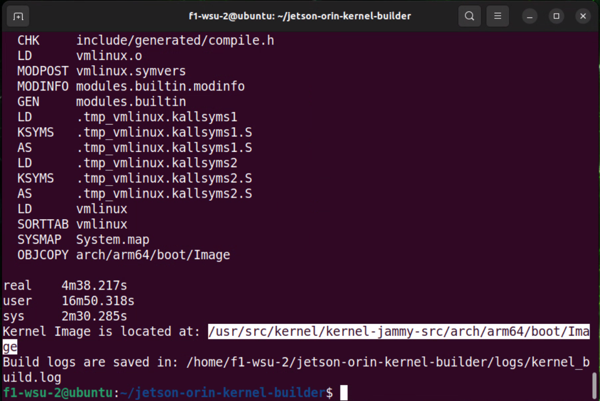
Next, you will edit the build_info.txt file
gedit build_info.txt
Edit the document to include the path to the kernel image you copied earlier.

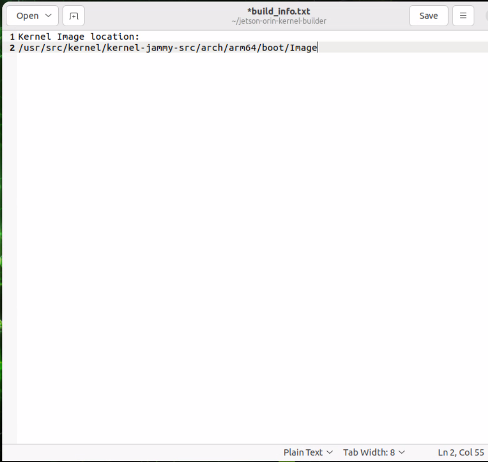
Building the Kernel Modules¶
Build the kernel modules using the provided script.
./scripts/make_kernel_modules.sh
When prompted Do you want to install the modules? Type N and press Enter.
Installing a New Modules¶
Run this script to get Module information.
./scripts/module_info.sh -s CH34
Look for the module name ch341 and see if it is in the right location:

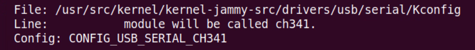
Using the module location make sure it is in there:
ls /usr/src/kernel/kernel-jammy-src/drivers/usb/serial/ch341.ko
Output should be something like this:

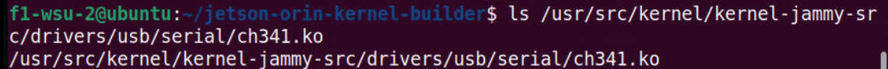
More detailed information about the module by running:
./scripts/module_info.sh CONFIG_USB_SERIAL_CH341

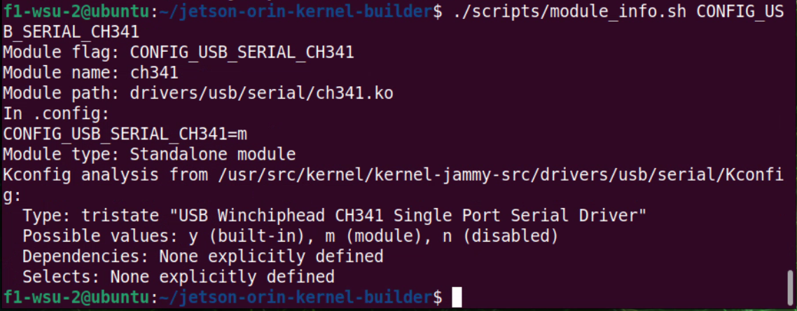
Copy the ch341 module to the current directory: (Make sure to use the correct path you found when you located the module earlier)
cp /usr/src/kernel/kernel-jammy-src/drivers/usb/serial/ch341.ko .
Create an install module script:
./scripts/install_module_author.sh ch341 drivers/usb/serial
Use the script to install the module (type ‘y’ when prompted):
./install_module_ch341.sh
Output should be something like this:

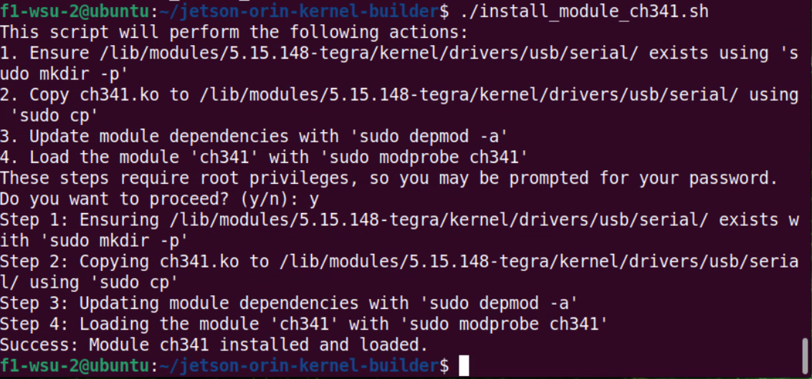
verify the module is installed:
lsmod | grep ch341
Output should be something like this:

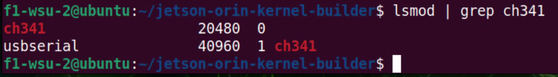
Installing the Kernel Image¶
Run the following script to install the kernel image:
Make a backup of your current kernel image:
cd /boot/extlinux/
sudo cp extlinux.conf extlinux.conf.original
Edit the file:
sudo gedit extlinux.conf
Make a backup copy of the Image (use a new terminal window):
cd /boot
sudo cp Image Image.backup
Go back to the extlinux.conf file and unccomment the Label Backup lines:
Pre-Edit

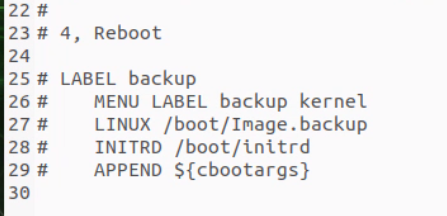
Post-Edit

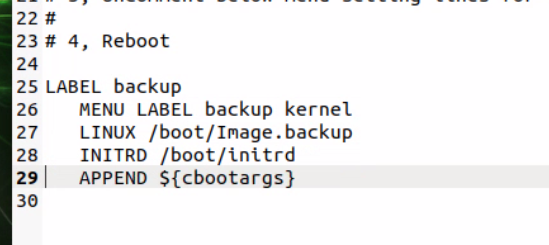
Copy line 10 and replace line 29 like the image below :

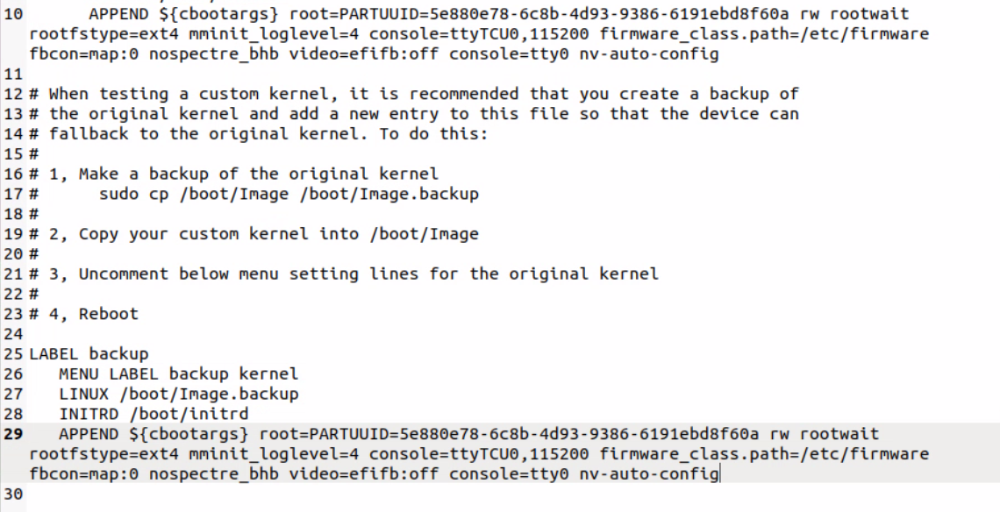
When complete Save and close the file
Go back to jetson-orin-kernel-builder directory:
cd ~/jetson-orin-kernel-builder
Copy the kernel image:
sudo cp /usr/src/kernel/kernel-jammy-src/arch/arm64/boot/Image /boot/Image
Reboot your Jetson:
JetPack 6 Orin Kernel Builder Video Walkthrough¶
This process applies to JetPack 6. A supporting walkthrough video is available on YouTube.
Jetson Orin helper: JetsonHacks jetson-orin-librealsense
Clone the JetsonHacks helper repository and follow its README for Jetson-specific build and install instructions:
git clone https://github.com/jetsonhacks/jetson-orin-librealsense.git cd jetson-orin-librealsense/build
Run this patch
./patch-for-realsense.sh
Build the Modules:¶
Switch over to the kernel building directory:
cd ~/jetson-orin-kernel-builder/
Run the script to install the modules:
./scripts/make_kernel_modules.sh
When prompted Do you want to install the modules? Type N and press Enter.
Complete a checksum:
cd ~/jetson-orin-librealsense/
sha256sum -c install-modules.tar.gz.sha256
The checksum should look something like this:

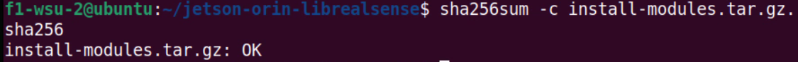
Expand and install modules directory:
tar -xzf install-modules.tar.gz
cd install-modules
Run the install script :
sudo ./install-realsense-modules.sh
Install librealsense¶
Register the Intel RealSense public key:
sudo apt-key adv --keyserver keyserver.ubuntu.com --recv-key F6E65AC044F831AC80A06380C8B3A55A6F3EFCDE || sudo apt-key adv --keyserver hkp://keyserver.ubuntu.com:80 --recv-key F6E65AC044F831AC80A06380C8B3A55A6F3EFCDE
Add the server to the list of repositories:
sudo add-apt-repository "deb https://librealsense.intel.com/Debian/apt-repo $(lsb_release -cs) main" -u
Install the RealSense SDK 2.0:
sudo apt-get install librealsense2-utils
sudo apt-get install librealsense2-dev
With the installation complete, reconnect the RealSense device:
realsense-viewer
Update the camera firmware to the latest version:

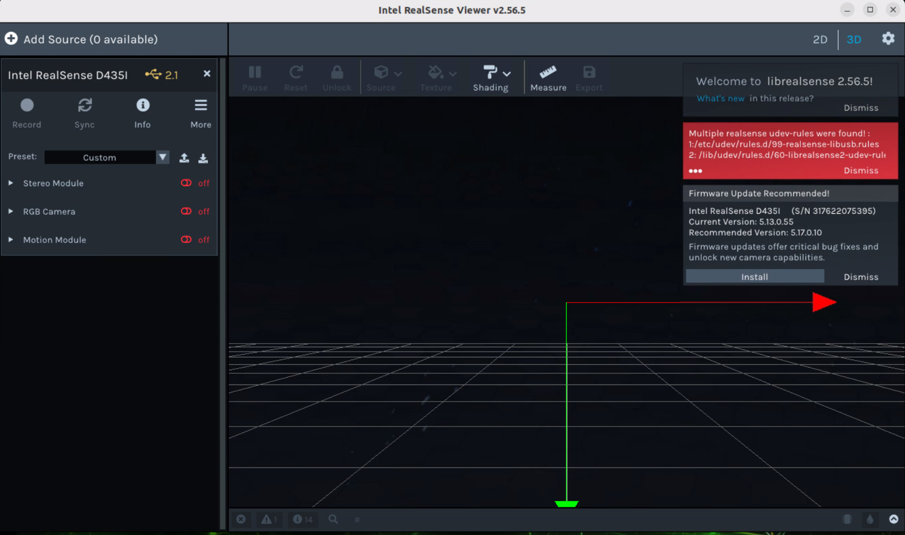
Other Resources¶
Installing Intel RealSense SDK 2.0: Jetson Hacks install Intel RealSense
Product page: Intel RealSense D435i
Getting started: RealSense developer docs